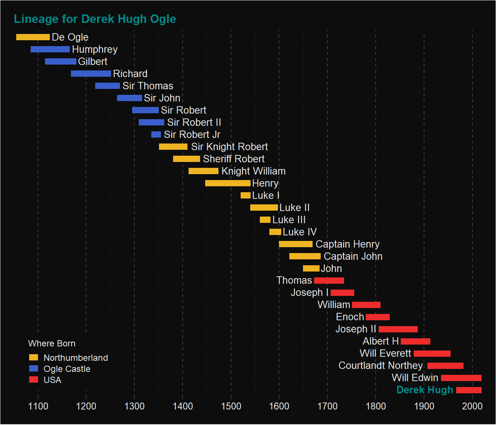

A few years ago Ron Flynn published a manuscript1 that detailed the genealogy and family history of the Ogle’s. I was listed in “Generation A2A” of the book!
1 See the Table of Contents here)
I found it interesting to trace my roots back through my father (Will Edwin, Figure 1), his father, and so on. Figure 2 shows that tracing back through 29 generations.
